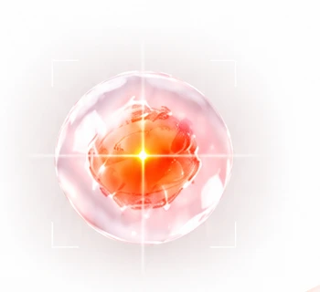
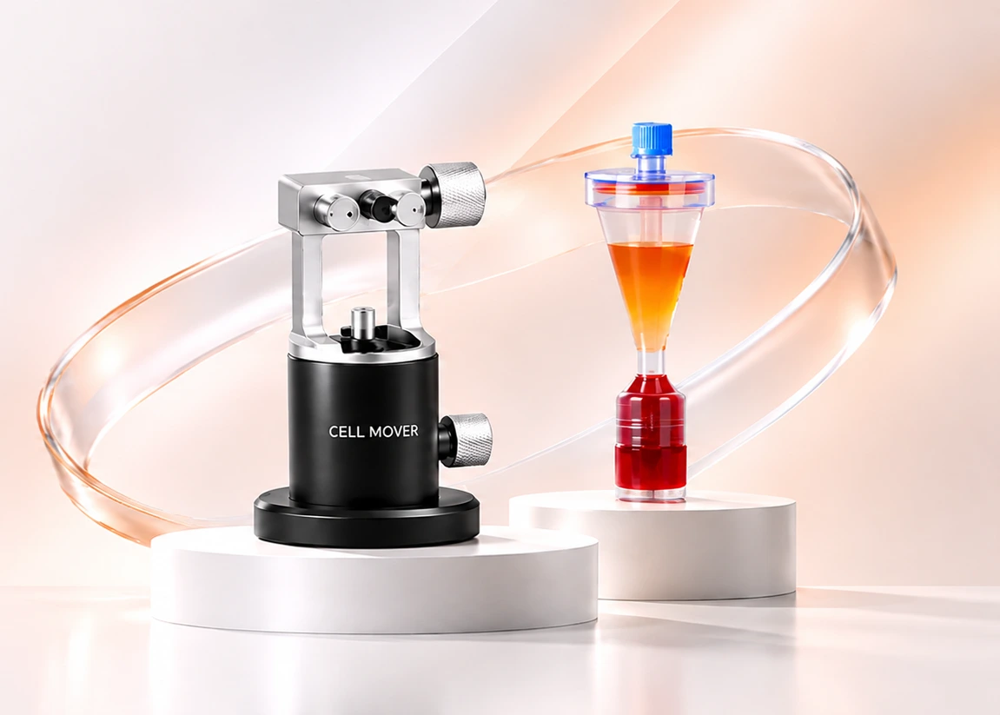
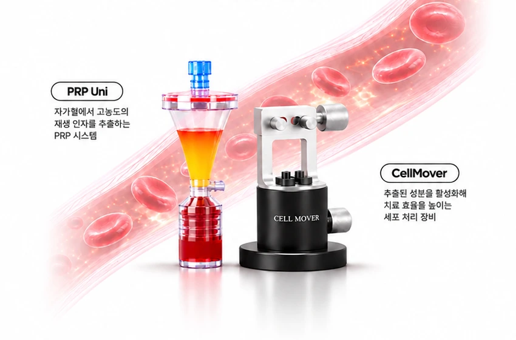
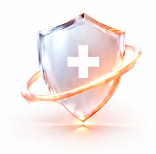
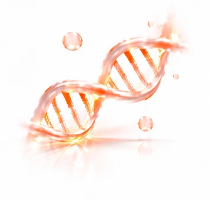
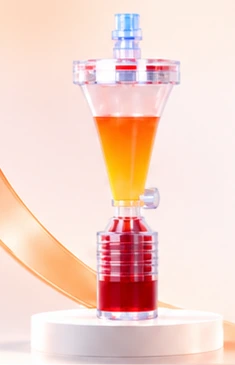
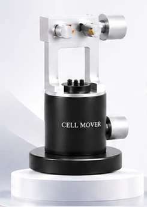

01PRECISION CARE
정밀한 케어
세포의 특성을 고려한 정밀한 처리로
높은 세포 생존율과 일관된 품질의
세포를 확보합니다.

세포의 회복과 재생을 지원하는
안정적이고 효율적인 시술 환경을 제공합니다.

PRP Uni와 CellMover를 함께 사용해
혈액을 기반으로 손상된 부위의 회복을 돕는
더 정밀하고 효율적인 치료 솔루션입니다.

세포의 가능성을 다시 깨우는 UNICELL만의 차별화된 기술력으로
더 안전하고, 더 정확하며, 더 효율적인 세포 기반 솔루션을 제공합니다.
세포의 특성을 고려한 정밀한 처리로
높은 세포 생존율과 일관된 품질의
세포를 확보합니다.

검증된 시스템으로 시술 과정의
변수를 최소화하고, 의료진이 신뢰할 수
있는 안정적인 시술 환경을 제공합니다.

세포의 활성도를 극대화하고
회복 과정을 효율적으로 지원하여
더 나은 치료 결과를 기대할 수 있습니다.

하나의 목적을 위해 정밀하게 설계된 세포 기반 솔루션을 만나보세요.


하나의 목적을 위해 정밀하게 설계된 세포 기반 솔루션을 만나보세요.
궁금한 제품과 문의 내용을 남겨주시면 담당자가 안내해 드립니다.
도입 문의하기 →